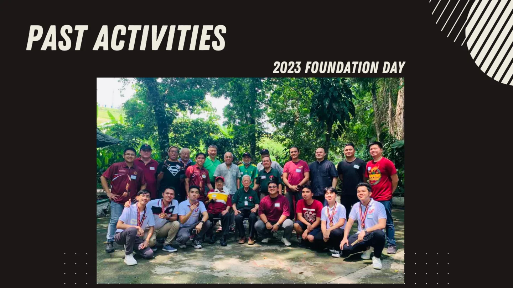
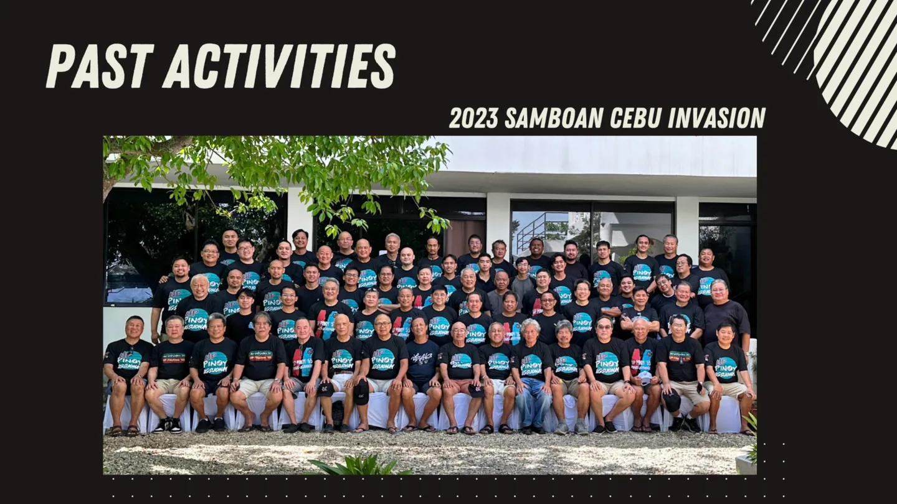
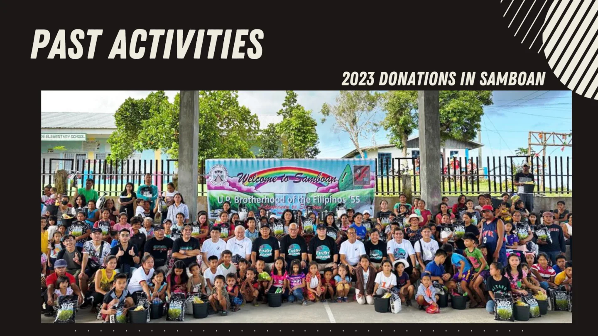
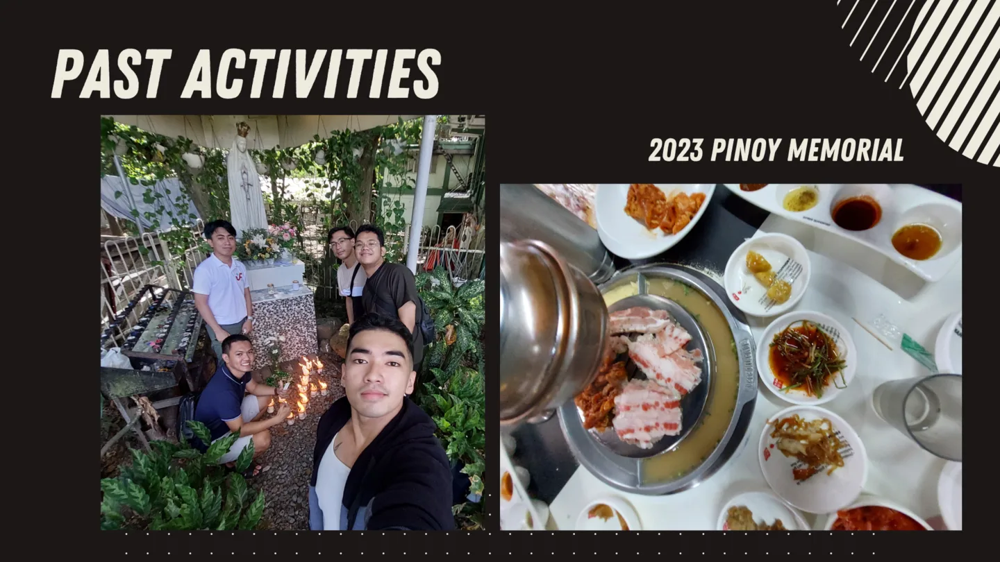
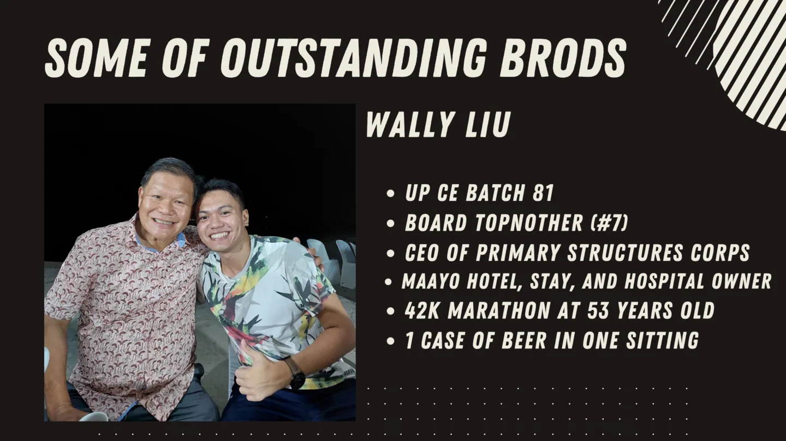
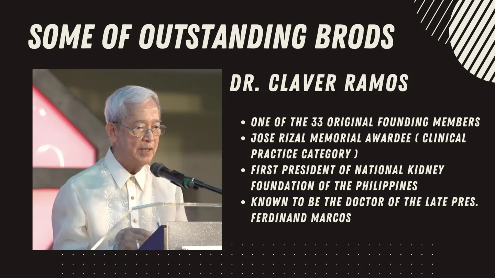
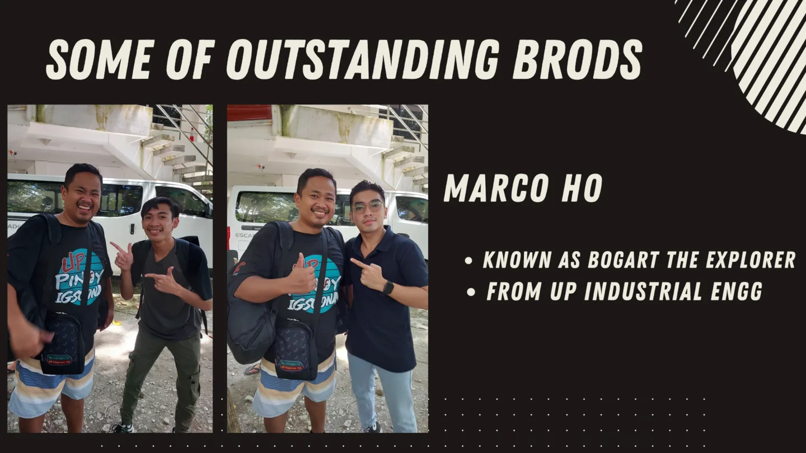

Formation
The founding story anchors the brotherhood in student life at UP Diliman and gives the organization a strong sense of institutional memory.
The UP Brotherhood of the Filipinos 55 was formed on May 26, 1956 at the Men’s South Dorm of the UP Diliman campus by 33 Original Filipinos. The organization is also known as the UP Brotherhood of the Filipinos 1955, UP Filipinos ’55, and Pinoy ’55.
The founding story anchors the brotherhood in student life at UP Diliman and gives the organization a strong sense of institutional memory.
Its mission is to enrich campus life and establish meaningful programs that benefit members, the brotherhood, and Philippine society.
Brotherhood, loyalty, and determination are presented not as slogans, but as standards for how members should carry themselves toward one another.
Brotherhood, loyalty, and determination define the fraternity culture UPBF 55 seeks to sustain: a culture of reliability, counsel, fairness, and perseverance.
The ability to listen, give counsel, and assist one’s brothers whenever possible in an environment of solid and sincere camaraderie.
A commitment to deal fairly and truthfully with one’s brothers, in both word and deed.
The refusal to give up on worthwhile work, regardless of difficulty or the length of time required to see it through.
The archival images convey both formality and warmth: a fraternity that remembers its past, values shared milestones, and keeps group identity visible.


These activities show a fraternity that continues to gather, travel, serve communities, and maintain ties with senior brods.




These profiles present the breadth of the brotherhood’s alumni network and the long-term value of intergenerational connection.

UP Civil Engineering alumnus, board topnotcher, and CEO of Primary Structures Corp, reflecting the fraternity’s connection to engineering leadership and enterprise.

One of the 33 original founding members, a José Rizal Memorial Awardee in clinical practice, and the first president of the National Kidney Foundation of the Philippines.

Known as Bogart the Explorer and associated with UP Industrial Engineering.
Associated with Prince Hypermarket and past leadership roles in the Cebu Chamber of Commerce and Industry and the Philippine Retailers Association.
CEO of Lite Shipping Corporation and chairman of the Philippine Coastwise Shipping Association.
A multi-awarded Filipino industrial designer and manufacturer with an internationally recognized creative profile.
President and CEO of the Philippine National Oil Company.
Vice Governor of Cebu and former Governor of Cebu from 2013 to 2019.